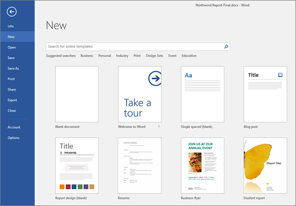
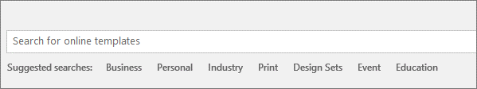
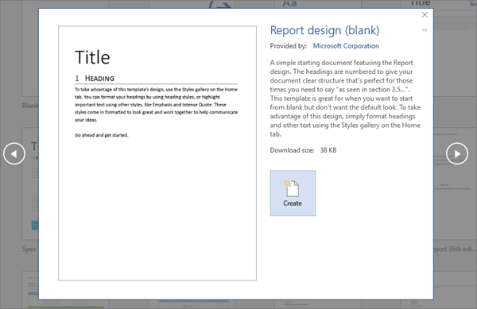

Creating a Microsoft Word Document
To create a document, simply open Word, select a blank document or template, and start typing. Word offers many professionally designed templates to help you create letters, resumes, reports, and more.
Create a blank document
1. Open Word. Or, if Word is already open, select File > New.
2. Select Blank document.
Create a document using a template
1. Open Word. Or, if Word is already open, select File > New.

2. Double-click a template to open it.
Tip: Pin templates you like, so you always see them when you start Word. Select the template and then select the pin icon that appears next to the name of the template.
Search for a template
1. Open Word. Or, if Word is already open, select File > New.
2. In the Search for online templates box, enter a search word like letter, resume, or invoice.

Or select a category under the search box like Business, Personal, or Education.
3. Click a template to see a preview. Click the arrows on the side of the preview to see more templates.

4. Select Create.